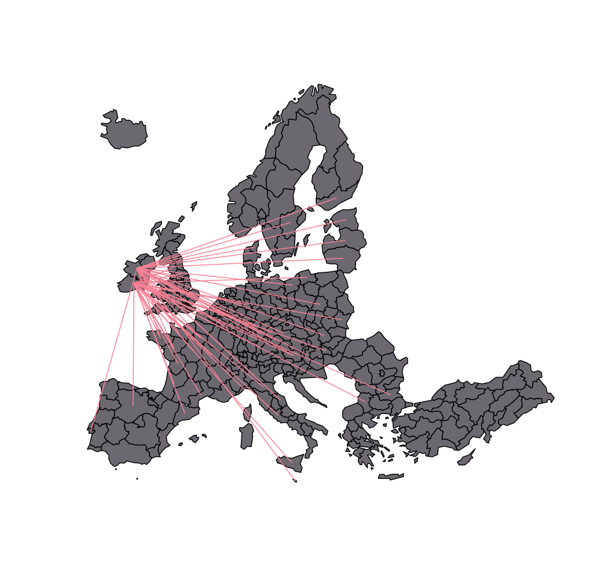

Create a links layer from a data frame of links.
getLinkLayer(x, xid = NULL, df, dfid = NULL)
| x | an sf object, a simple feature collection (or a Spatial*DataFrame). |
|---|---|
| xid | name of the identifier variable in x, default to the first column (optional) |
| df | a data frame that contains identifiers of starting and ending points. |
| dfid | names of the identifier variables in df, character vector of length 2, default to the two first columns. (optional) |
An sf LINESTRING is returned, it contains two variables (origins and destinations).
#> Reading layer `mtq' from data source #> `/tmp/RtmppBiN3A/temp_libpath43d97684eada/cartography/gpkg/mtq.gpkg' #> using driver `GPKG' #> Simple feature collection with 34 features and 7 fields #> Geometry type: MULTIPOLYGON #> Dimension: XY #> Bounding box: xmin: 690574 ymin: 1592536 xmax: 735940.2 ymax: 1645660 #> Projected CRS: WGS 84 / UTM zone 20Nmob <- read.csv(system.file("csv/mob.csv", package="cartography")) # Select links from Fort-de-France (97209)) mob_97209 <- mob[mob$i == 97209, ] # Create a link layer mob.sf <- getLinkLayer(x = mtq, df = mob_97209, dfid = c("i", "j")) # Plot the links1 plot(st_geometry(mtq), col = "grey")